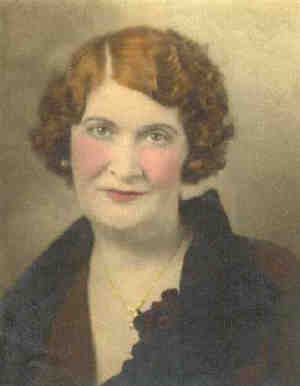

 Ethel PARKER |
Ethel PARKER 1
Ethel married Werner MEDER, son of Joannes MEDER and Mary BODENLOS. (Werner MEDER was born on 18 Dec 1896 in Ohio, USA 1 2 and died in Mar 1968 3.) |
1 Mike Damon, E-mail to Tom Hoey (15Apr 2008).
2 Ohio, Cuyahoga County, 1900 U.S. Census, Population Schedule (Washington, D.C., National Archives and Records Administration), ED 197, Sheet 13, Line 14.
3 Social Security Administration, Death Master File (http://www.ancestry.com/search/rectype/vital/ssdi/main.htm).